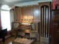

|
We are very proud to present the Phoenix PD367 custom
digital organ. This is a true masterpiece that
has been designed by the owner, Mr. Darrell Ackmann of
Virginia, and Jim & Don Anderson of Phoenix Organs NA,
with the assistance of D. L. Simmons. This is
among the largest organs by Phoenix Organs
installed in the United States.
D.
L. Simmons has also designed and built the custom casework
that houses the many speakers used by the 8 discrete
channels used in the audio system of this impressive
instrument and which surrounds the organ console in the
style of a tracker case. This grand achievement in
tonal design, organ architecture, and fine wood working has
been installed recently. (Click on the small image to
see larger photo!)
(Click here to see Specifications for
this organ)
Click
here to see the Installation
Photo Gallery!
Mr.
Ackmann has graciously provided a gift for us all! You may
download a MP3 of him playing his Phoenix organ performing
Claude Louis Balbastre's "Noel with Variations:
Josef est bien Marie". It was recorded with the
French specification and Silbermann tuning. This is a 7
megabyte file and is recommended for DSL or Cable
connections, or dial-up only if you are a very patient
person! To download -- [CLICK
HERE]
|


{kind=link}